The Battery Energy Storage System (BESS) market is experiencing explosive growth, yet the transactional infrastructure supporting these assets remains mired in complexity, opacity, and inefficiency. As energy storage becomes central to grid stability and renewable integration, blockchain technology emerges as a transformative solution that could fundamentally reshape how BESS transactions are executed, verified, and settled. This analysis examines the concrete ways blockchain can enhance BESS energy transactions, from peer-to-peer trading to automated grid services.
The Current Transactional Challenge
Today's BESS operations involve highly complex, multi-party transactions that create significant friction. Large energy consumers install BESS systems to reduce peak demand charges and improve power reliability, but these systems require continuous monitoring of state of charge (SoC), terminal voltage, temperature, and environmental conditions. The transactional layer adds further complexity—energy trading involves multiple sources, suppliers, distributors, and middlemen, each adding costs and potential failure points.
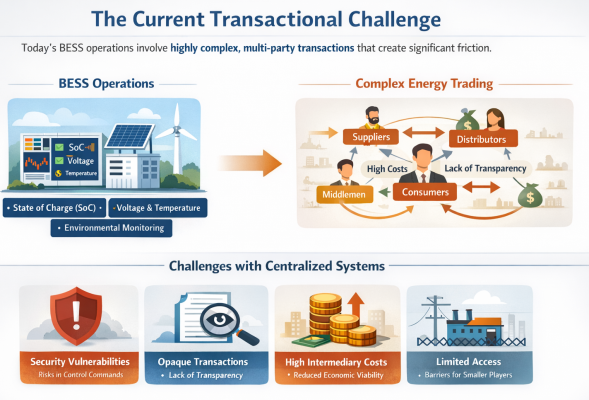
Traditional centralized systems struggle with:
- Security vulnerabilities when control commands are transmitted to distributed energy resources
- Lack of transparency in energy trading and carbon offset verification
- High intermediary costs that reduce economic viability
- Limited accessibility for smaller participants to enter energy markets
Blockchain Fundamentals for Energy Storage
Blockchain technology provides a distributed ledger system where transactions are recorded in cryptographically linked blocks, creating an immutable and independently verifiable record. For BESS applications, this architecture delivers three critical capabilities:
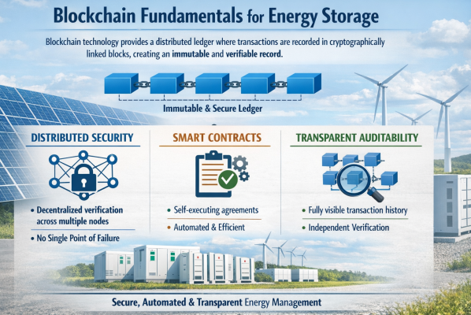
- Distributed Security: Rather than relying on a single central authority, blockchain distributes verification across multiple nodes, eliminating single points of failure
- Smart Contracts: Self-executing programs that automatically enforce agreement terms when predefined conditions are met
- Transparent Auditability: All participants can independently verify transactions without expensive proprietary platforms
Key Improvements in BESS Transactions
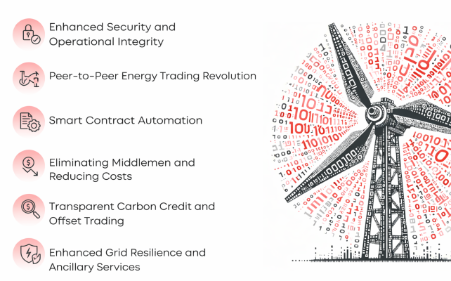
1. Enhanced Security and Operational Integrity
Blockchain provides unparalleled security for BESS control commands. When dispatching generation units during peak hours, control signals require the highest level of protection against cyber threats. Blockchain's distributed verification ensures that only authenticated operators can authorize commands, while continuously monitoring ESS status and facility environments.
The technology authenticates registered operators, authorizes valid sensors and gateways, and manages user permissions while detecting abnormal ESS conditions in real-time. This creates a secure Network Operations Center (NOC) environment where control commands to BESS and other Distributed Energy Resources (DERs) maintain complete integrity.
2. Peer-to-Peer Energy Trading Revolution
Perhaps the most disruptive application is enabling direct energy trading between BESS-equipped prosumers and consumers. Blockchain systems allow users to trade energy directly, including renewable sources, eliminating traditional intermediaries. This creates a bi-directional relationship where participants can simultaneously be buyers and sellers based on real-time needs.
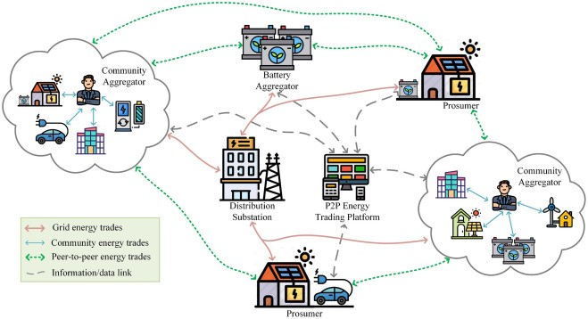
Key benefits include:
- Higher earnings for prosumers: Sellers earn more than traditional feed-in tariffs by setting competitive prices
- Lower costs for consumers: Buyers access electricity below retail rates while supporting renewables
- Community empowerment: Local energy trading reduces grid dependency and maximizes renewable consumption
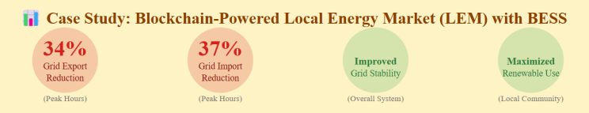
A case study demonstrated that blockchain-powered Local Energy Markets (LEMs) with BESS integration reduced grid export by 34% and import by 37% during peak hours, significantly improving grid stability.
3. Smart Contract Automation
Smart contracts automate complex energy management strategies without human intervention. In park microgrid applications, these self-executing programs automatically generate day-ahead electricity purchase plans and shared storage operation schedules based on Time-of-Use (ToU) pricing and storage arbitrage opportunities.
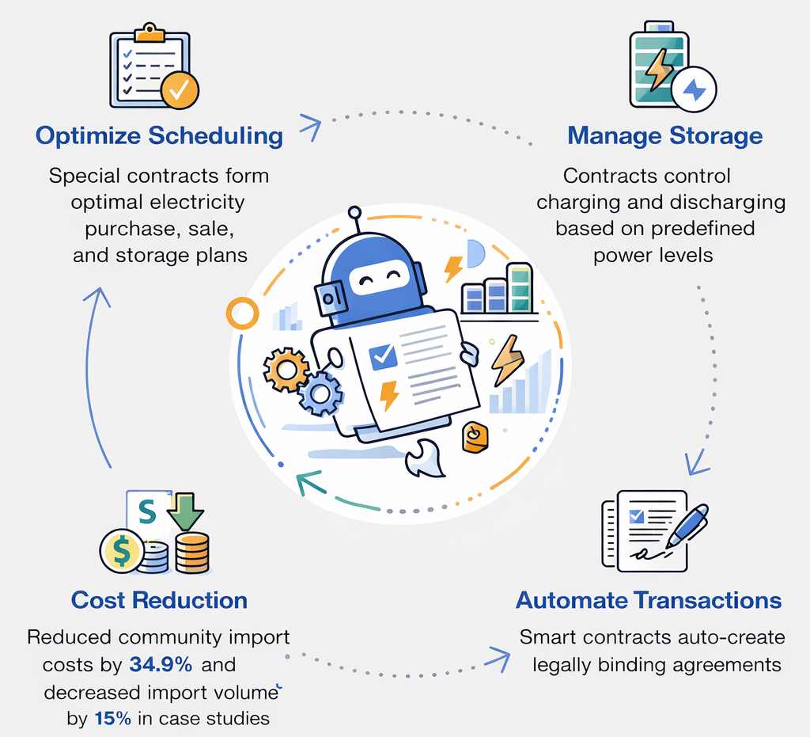
The system operates through specialized contracts:
- Optimization scheduling contracts formulate optimal electricity purchase, sale, and storage plans
- Storage control contracts manage charging/discharging processes based on predefined power levels
- Transaction generation contracts create legally binding agreements automatically
This automation reduced community import costs by 34.9% and decreased total import volume by 15% in validated case studies.
4. Eliminating Middlemen and Reducing Costs
Blockchain transactions excel at removing intermediaries, directly lowering costs for energy retailers and consumers. Traditional commodity trading platforms require millions in investment for proprietary systems, while blockchain provides accessible, secure alternatives.
The decentralized architecture enables:
- Direct wholesale market access for end-users
- Transparent carbon offset and green certificate trading
- Automated metering and settlement systems
5. Transparent Carbon Credit and Offset Trading
Blockchain's immutable ledger creates trustworthy systems for renewable energy certificate (REC) trading. Companies currently spend substantial resources on proprietary platforms to track and execute offset transactions. Blockchain ensures the immutability of energy trading records while making green certificates and carbon offsets more accessible and less costly to obtain.
6. Enhanced Grid Resilience and Ancillary Services
BESS systems provide critical grid services including voltage regulation and frequency response. Blockchain integration improves these services through:
- Real-time supply-demand matching between complementary profiles
- Dynamic pricing mechanisms that reflect actual grid conditions
- Decentralized optimization that reduces grid generation burden
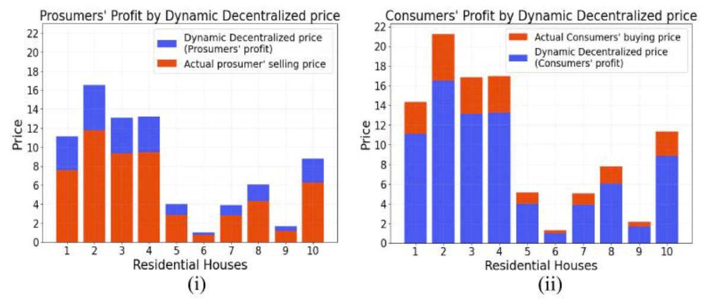
A proposed Decentralized and Transparent P2P Energy Trading (DT-P2PET) scheme demonstrated reduced grid energy generation burden while increasing profits for both consumers and prosumers through dynamic pricing.
Technical Implementation Architecture
Modern blockchain-BESS integration follows a multi-layer architecture:
Layer 1: IoT and Sensor Integration
- Smart meters and IoT modules monitor energy generation, consumption, and storage status
- Real-time data on SoC, voltage, temperature, and power flows feed into the blockchain
Layer 2: Blockchain Platform
- Distributed nodes representing microgrids, resource owners, service providers, and regulators
- Consensus committees validate transactions and execute decentralized scheduling
- Privacy protection through secret sharing schemes prevents data leakage
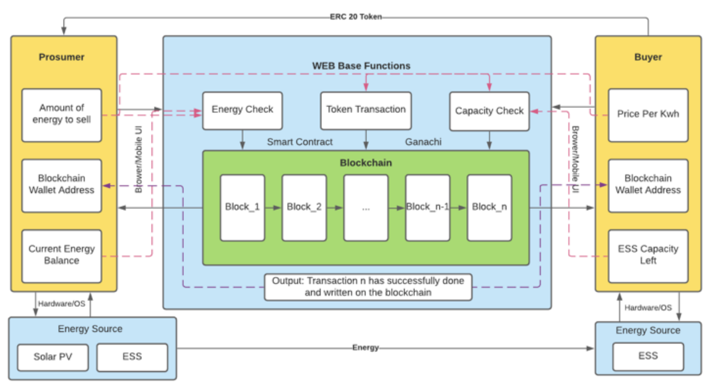
Layer 3: Smart Contract Execution
- Predefined management strategies automatically trigger when conditions are met
- Contracts handle authentication, payment settlement, and storage control
- Off-chain storage systems like IPFS reduce blockchain data burden
Layer 4: User Interface
- Blockchain explorers provide transparent real-time monitoring
- Custom dashboards display energy scheduling, storage status, and transaction records
- Anomaly detection mechanisms alert management to irregularities
Real-World Applications and Case Studies
Edgecom Energy Implementation
Edgecom Energy utilizes blockchain to dispatch BESS systems that reduce Global Adjustment costs during peak hours. The integration ensures the highest security level for control commands sent to BESS and other DERs, enabling unparalleled reliability and safety.
Power Ledger's Local Energy Markets
Powerledger blockchain-powered LEMs enable homeowners with solar panels and BESS to seamlessly trade excess energy with neighbors. The system achieved nearly 34% reduction in peak grid export and 37% reduction in peak import, demonstrating significant grid stabilization benefits.
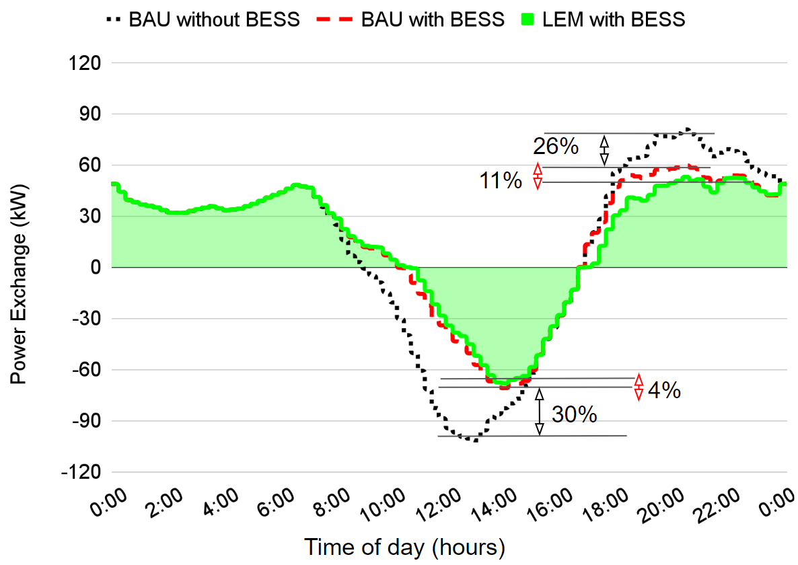
Academic Research Validation
A 2024 study on park microgrids with shared energy storage demonstrated that blockchain-based energy management reduced total operating costs by approximately 85% in scenarios with substantial storage capacity. The system optimized charging/discharging schedules based on ToU pricing while maintaining data tamper-resistance and privacy protection.
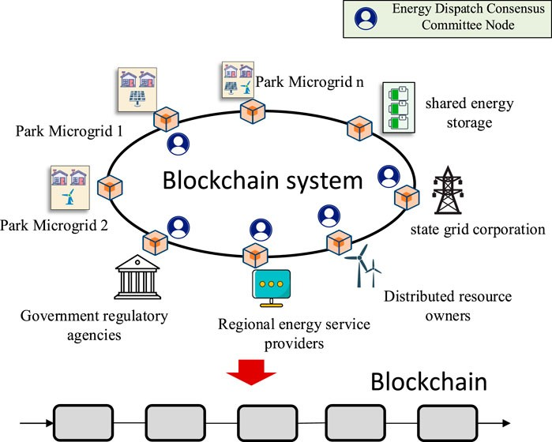
The Scalability Trilemma and Solutions
Blockchain faces a fundamental "trilemma" balancing scalability, security, and decentralization. Early base-layer models struggled with transaction throughput for high-frequency energy trading. However, second-layer solutions now enable rapid, frequent trading while maintaining security.
Proposed frameworks emphasize:
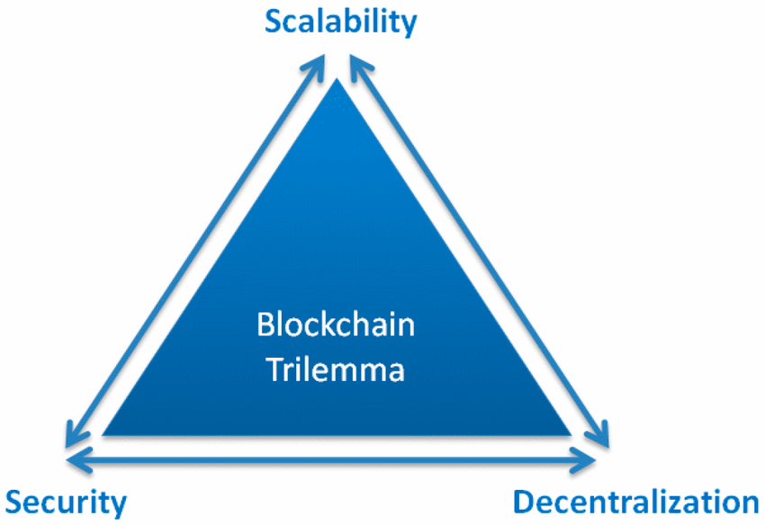
- Scalability: Handling numerous micro-transactions between distributed resources
- Robustness: Maintaining system operation during network disruptions
- Security: Preserving cryptographic integrity and fraud prevention
These solutions are empirically validated through trial case studies, demonstrating feasibility for real-world deployment.
Challenges and Considerations
Despite significant advantages, several challenges remain:
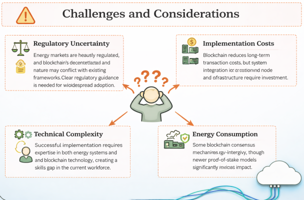
- Regulatory Uncertainty: Energy markets are heavily regulated, and blockchain's decentralized nature may conflict with existing frameworks. Clear regulatory guidance is needed for widespread adoption.
- Implementation Costs: While blockchain reduces long-term transaction costs, initial system integration and node infrastructure require investment. However, this is often offset by eliminating proprietary platform fees.
- Technical Complexity: Successful implementation requires expertise in both energy systems and blockchain technology, creating a skills gap in the current workforce.
- Energy Consumption: Some blockchain consensus mechanisms are energy-intensive, though newer proof-of-stake models significantly reduce this impact.
Future Market Transformation
The integration of blockchain with BESS represents more than incremental improvement—it enables fundamentally new market structures. As electric vehicles and distributed storage proliferate, blockchain provides the transactional backbone for:
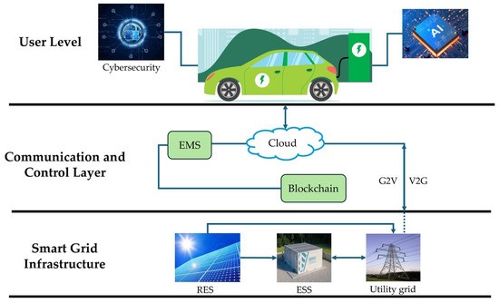
- Vehicle-to-Grid (V2G) Integration: EV batteries participating in peer-to-peer trading and grid services
- Community Microgrids: Self-governing energy ecosystems with transparent rule enforcement
- Dynamic Energy Markets: Real-time pricing that reflects instantaneous supply and demand
- Democratized Access: Allowing consumers without financial means to access energy through innovative sharing
Conclusion
Blockchain technology offers transformative improvements for BESS energy transactions by enhancing security, enabling peer-to-peer trading, automating operations through smart contracts, and eliminating costly intermediaries. Real-world implementations demonstrate measurable benefits including 34-37% reductions in peak grid stress and up to 85% decreases in operating costs.
For BESS operators, investors, and policymakers, the question is no longer whether blockchain can improve energy transactions, but how quickly they can implement this technology to capture first-mover advantages. As renewable energy and storage costs continue falling, blockchain-enabled markets will unlock the full economic and grid stability potential of distributed energy resources.